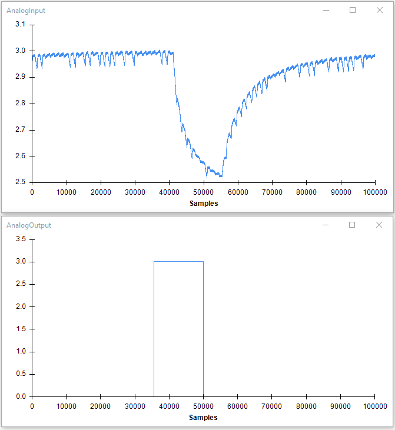

AI/AO Synchronization
Summary
This example demonstrates how to send analog outputs and receive analog inputs from a National Instruments board in a synchronized way.
Workflow
Details
- Reads analog inputs from a NIDAQ board. The ports to be read are defined in the Channels property. In this example we are using analog input 0 (ai0). The node is set to collect analog inputs at 100000Hz divided in buffers of 10000 samples. The SignalSource property, which defines the clock signal, is set to be the same as that used for the analog output ports (see 2.3).
- Generates a sawtooth function of with amplitude of 0.7 and frequency of 1Hz (in a buffer with size 10000), converts it into a step function and sends it to the analog output 0 (ao0).
- Creates the step function by rounding the input float values (which are in the range [0,0.7]) to integer values of 0 or 1.
- Converts the signal back to floats and amplifies them by a factor of 3. This the final voltage values set in the analog output (2.3)
- Sends a buffer with a step signal to the analog output port 0 (ao0) every 100ms, generating a total of 10 steps cycles per second.
Testing
The synchronization of the two signals can easily be tested by connecting the analog output to a LED and the analog input to a light-sensitive photodiode. If the result is correct, the two waves should be phase-locked to each other as shown below.*

*Note though that you could potentially observe a constant phase-shift between them; this is because at the moment the DAQmx package does not allow yet for using the same trigger to initiate the analog input and output ports.